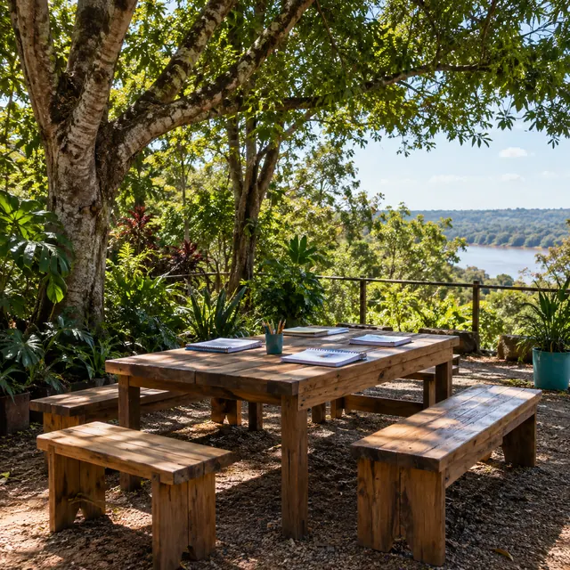
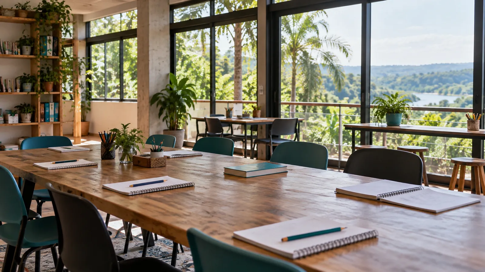
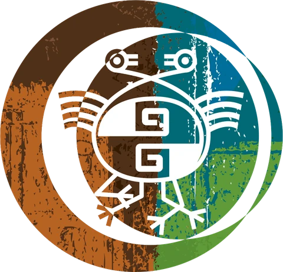
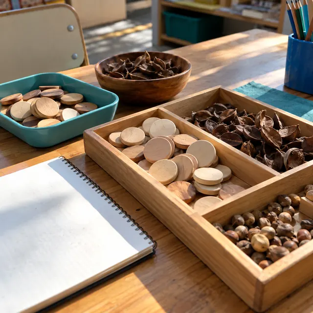
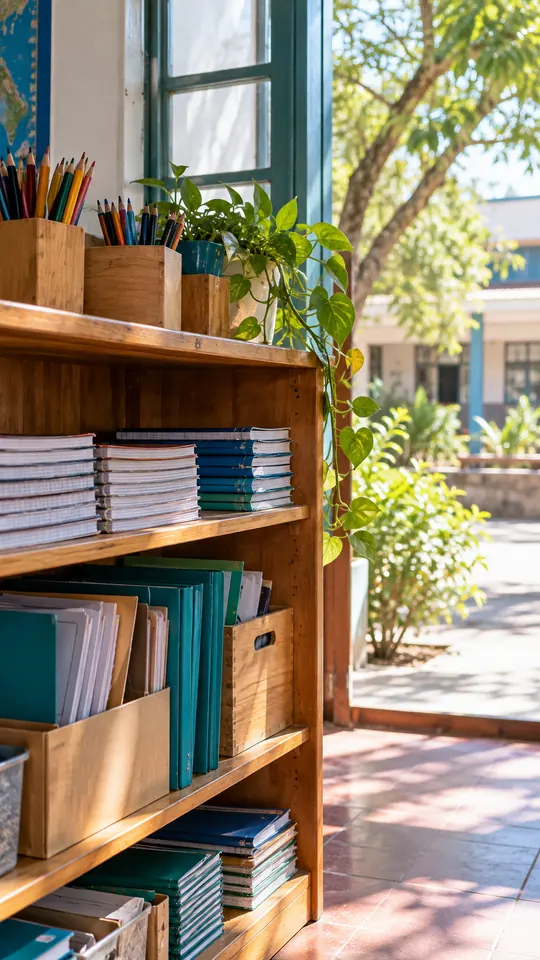
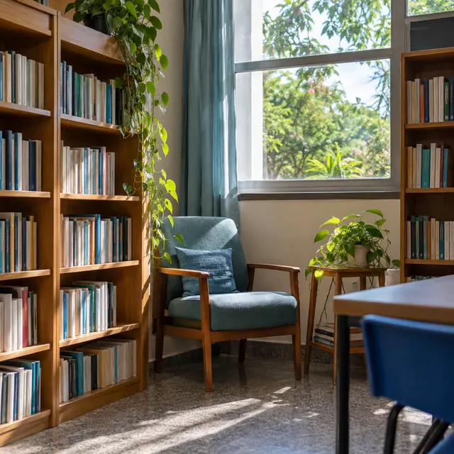
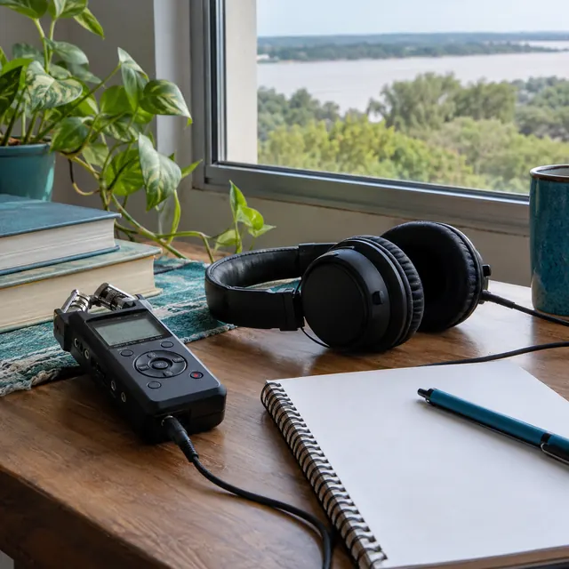
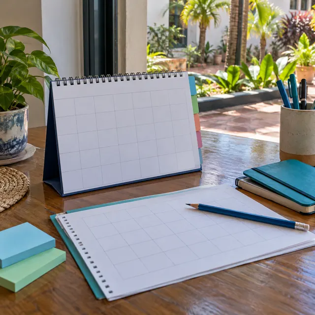

Consultoría en EIB
Asesoramos a escuelas, equipos técnicos e instituciones para planificar la Educación Intercultural Bilingüe desde la mirada de los pueblos.
Consultar por esto

Consejo Educativo Autónomo de Pueblos Indígenas · Región NEA
Consultoría, acompañamiento a docentes y estudiantes, y materiales en nuestras lenguas para las escuelas de Formosa, Chaco, Corrientes, Misiones, Entre Ríos y Santa Fe.

Asesoramos a escuelas, equipos técnicos e instituciones para planificar la Educación Intercultural Bilingüe desde la mirada de los pueblos.
Consultar por estoEstamos cerca de docentes y estudiantes de pueblos originarios: en el aula, en la planificación y a lo largo del recorrido escolar.
Consultar por esto
Elaboramos recursos para el aula y bibliografía en lenguas qom, wichí, pilagá, moqoit, guaraní, mbya guaraní y charrúa.
Consultar por estoFormosa · Chaco · Corrientes · Misiones · Entre Ríos · Santa Fe


Quiénes somos
Enseñamos en nuestras lenguas y desde nuestros saberes, para que cada escuela reconozca la identidad de sus estudiantes.
El CEAPI, Consejo Educativo Autónomo de Pueblos Indígenas, reúne en la región NEA a educadores de pueblos originarios de Formosa, Chaco, Corrientes, Misiones, Entre Ríos y Santa Fe. Trabajamos para que la Educación Intercultural Bilingüe llegue a cada aula con las lenguas, los saberes y la identidad de nuestros pueblos.
Lenguas
Elegí una lengua y mirá en qué provincias de la región la trabajamos.
Pueblo qom
Comunidades en Chaco, Formosa y Santa Fe.
Pedir materiales en qom
Nos cuentan qué necesitan: una planificación, un material en lengua o acompañamiento en el aula.
Cada propuesta la trabajan educadores que hablan la lengua y conocen la comunidad.
Recursos para el aula y bibliografía en la lengua de cada pueblo, junto al castellano.
Seguimos el trabajo con docentes y estudiantes durante el ciclo lectivo.
Calendario escolar EIB
Organizamos el calendario escolar con las fechas que importan a nuestros pueblos. Elegí un mes y pedinos materiales para esa fecha.

Contacto
Respondemos por WhatsApp. Completá la consulta o escribinos directo a este número:
En la región NEA: Formosa, Chaco, Corrientes, Misiones, Entre Ríos y Santa Fe.
Qom, wichí, pilagá, moqoit, guaraní, mbya guaraní y charrúa.
Sí. Acompañamos a docentes y a estudiantes de pueblos originarios en su recorrido escolar.
Escribinos por WhatsApp con la provincia, la escuela y lo que necesitan. Con eso coordinamos el primer encuentro.